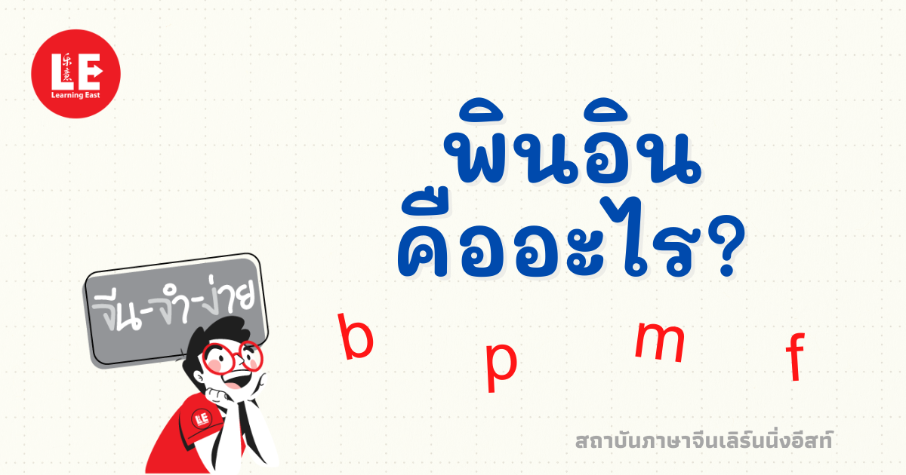

พินอินคืออะไร

พินอิน (Pinyin) หรือชื่อเต็มว่า ฮั่นอวี่พินอิน คือ ระบบสากลที่ใช้อักษรละติน (ภาษาอังกฤษ A-Z) มาใช้ถอดเสียงอ่านของตัวอักษรจีนกลาง เพื่อเป็นสะพานเชื่อมให้ผู้เริ่มต้นเรียนภาษาจีนสามารถอ่านและออกเสียงได้อย่างถูกต้อง เนื่องจากตัวอักษรจีนเป็นอักษรภาพ (Logogram) ที่บอกความหมายแต่ไม่ได้บอกวิธีออกเสียงในตัวเอง การเห็นตัวจีนตัวหนึ่งโดยไม่มีพินอินกำกับ จึงไม่สามารถเดาได้เลยว่าคำนั้นอ่านว่าอะไรโครงสร้างของพินอินในแต่ละพยางค์จะทำงานคล้ายกับการสะกดคำในภาษาไทย โดยประกอบด้วย 3 ส่วนสำคัญ ที่ต้องนำมาผสมกัน ได้แก่:พยัญชนะต้น (Initials): มีทั้งหมด 21 เสียงหลัก ทำหน้าที่เป็นเสียงเปิดของคำ เช่น b (เสียง ป), p (เสียง พ), m (เสียง ม), f (เสียง ฟ) รวมถึงกลุ่มเสียงพ่นลมและไม่พ่นลมที่เป็นเอกลักษณ์ของภาษาจีน เช่น zh, ch, sh, rสระ (Finals): มีทั้งหมด 36 เสียง แบ่งเป็นสระเดี่ยวพื้นฐาน 6 ตัว (a, o, e, i, u, ü) และสระผสมอีก 30 เสียง (เช่น ai ไอ, an อัน, ang อัง) ซึ่งทำหน้าที่รองรับเสียงพยัญชนะวรรณยุกต์ (Tones): มี 4 รูป 5 เสียง (รวมเสียงเบา) ถือเป็นส่วนที่สำคัญมากเพราะภาษาจีนเป็นภาษาดนตรี การเปลี่ยนเสียงวรรณยุกต์จะทำให้ความหมายเปลี่ยนไปโดยสิ้นเชิง เช่น ตัวสะกด ma หากใส่เสียงหนึ่ง mā จะแปลว่า แม่ แต่หากใส่เสียงสาม mǎ จะเปลี่ยนความหมายเป็น ม้า ทันทีนอกจากพินอินจะมีประโยชน์สูงสุดในการช่วยให้ชาวต่างชาติและเด็กชาวจีนเรียนรู้วิธีการออกเสียงที่ถูกต้องแล้ว ในยุคดิจิทัล พินอินยังกลายเป็นเครื่องมือมาตรฐานโลกในการพิมพ์ภาษาจีนบนคอมพิวเตอร์และสมาร์ตโฟน โดยเราจะพิมพ์อักษรภาษาอังกฤษตามเสียงพินอิน แล้วระบบจะแปลงสัญญานั้นขึ้นมาเป็นตัวอักษรจีนให้เราเลือกใช้งานได้อย่างสะดวกและรวดเร็ว